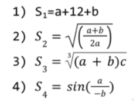

ДЗ №2
-
Задача 0
Обчислити значення виразів.
 -
Задача 1
Знайти суму, добуток та частку двох дійсних чисел. Результат вивести у формі таблиці.
-
Задача 2
Дано рік народження(дата 1 січня) та поточний рік. Знайти кількість років.
-
Задача 3
Дано вартість одиниці товару та кількість. Знайти загальну вартість та ПДВ(5 % від загальної вартості).
-
Задача 4
Дано довжину у сантиметрах. Визначити скількі це метрів і кілометрів.
-
Задача 5
Дано кількість секунд, що пройшла від початку доби. Визначити скільки це годин і хвилин.
-
Задача 6
З клавіатури вводяться вартість товару та кількість одиниць 3 товарів. Обчислити вартість кожного товару окремо та загальну вартість. Вивести чек (як у супермаркеті) використовуючи елементи розмітки.
-
Задача 7
Знайти суму випадкового номера місяця (від 1 до 12) та випадкового номера дня(від 1 до 6).
ДЗ Лінійні Додаткові задачі
-
Задача 1(додаткові)
Дано ширину екрана та кількість елементів, які повинні бути відображені у рядку. Визначити ширину елементів, які повинні бути відображені у цьому рядку.
-
Задача 2(додаткові)
З клавіатури вводиться розмір заробітної плати та розмір прожиткового мінімуму. Визначити розмір соціальної допомоги (ввжаємо, що заробітна плата є меншою).
-
Задача 3(додаткові)
З клавіатури вводяться вартість одиниці та кількість одиниць двох товарів. Вивести на екран вартість кожного з видів товарів окремо і загальну вартість.
-
Задача 4(додаткові)
З клавіатури вводиться вік дитини. Вивести на екран через скільки років вона буде відвідувати садочок, піде у школу, закінчить школу, вступить і закінчить.
-
Задача 5(додаткові)
Визначити, яку платню одержить на фірмі сумісник за виконану роботу, якщо йому нараховано S грн., а податок становить 20%.
-
Задача 6(додаткові)
Дано три дійсні змінні a, b і c. Скласти алгоритм, який міняє місцями значення цих змінних наступним чином: змінна a набуває значення змінної b, змінна b набуває значення змінної c, а змінна c – попереднє значення змінної a.
-
Задача 7(додаткові)
Скласти алгоритм, який обчислює цілу і дробову частину даного числа х. Наприклад: число 23,56 => ціла: 23, дробова: 0,56.
-
Задача 8(додаткові)
Розробити програму (не використовувати if), яка за номером року Y визначає номер століття C (врахувати, що початком XX століття був 1901, а не 1900 рік).
-
Задача 9(додаткові)
Скласти програму для розв’язування задачі: йде N-а секунда доби, визначити скільки повних годин і повних хвилин пройшло до цього моменту.
-
Задача 10(додаткові)
З клавіатури вводиться кількість монет номіналом 1 копійка. Визначити скільки гривень і копійок є у даній сумі . Наприклад, дано 245 копійок, а вивести 2 грн 45 копійок.
-
Задача 11(додаткові)
Дано поточну кількість годи, хвилин, секунд (як на годиннику). Визначити 1) яка кількість секунд буде на годиннику через N секунд. 2) яка кількість хвилин буде на годиннику через N секунд, X хвилин.
-
Задача 12(додаткові)
З клавіатури вводиться кількість монет номіналом 2 копійки (5коп, 25коп, 50 коп). Визначити скільки гривень і копійок є у даній сумі.
-
Задача 13(додаткові)
Визначити скільки повних тижнів є у вказаній кількості днів.
-
Задача 14(додаткові)
З клавіатури вводиться номер дня тижня (від 1 до 7). Визначити який буде день тижня через N днів.
-
Задача 15(додаткові)
З клавіатури вводиться кількість місяців, які пройшли від деякого моменту часу. Вивести повну кількість років і місяців. Наприклад, дано 28 місяців, а вивести 2 роки і 4 місяці.
-
Задача 16(додаткові)
З клавіатури вводиться номер місяця. Визначити, який буде місяць через вказану кількість N місяців.
-
Задача 17(додаткові)
Зашифрувати один введений англійський символ у верхньому регістрі (один з символів: A,B,…Z) методом зміщення (шифр Цезаря).